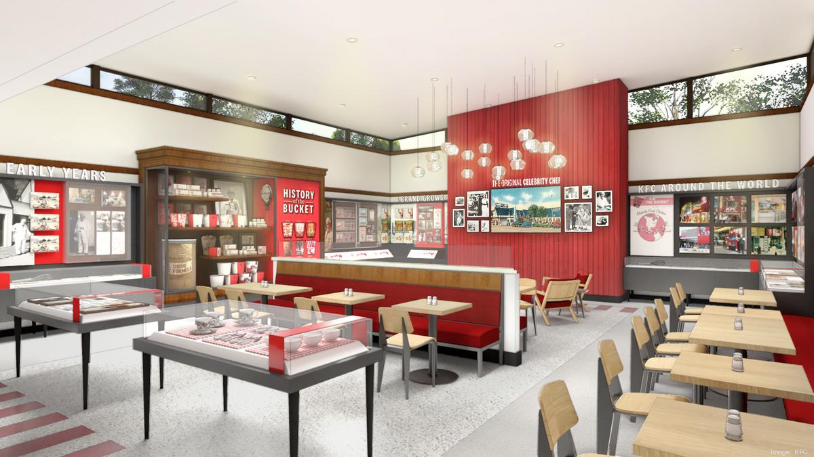
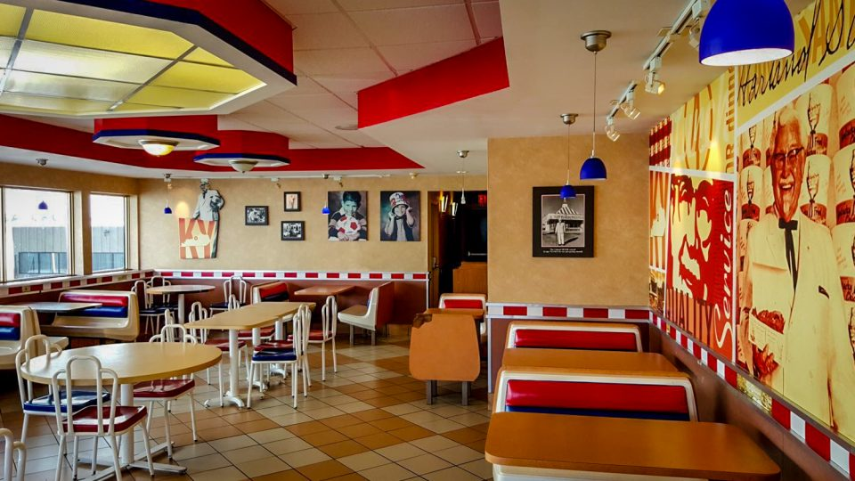

KFC
KFC (abbr. for Kentucky Fried Chicken) is an American fast food restaurant chain headquartered in Louisville, Kentucky that specializes in fried chicken. It is the world's second-largest restaurant chain (as measured by sales) after McDonald's, with 22,621 locations globally in 150 countries as of December 2019
KFC was founded by Colonel Harland Sanders, an entrepreneur who began selling fried chicken from his roadside restaurant in Corbin, Kentucky during the Great Depression. ... In the early 1970s, KFC was sold to the spirits distributor Heublein, which was taken over by the R. J
The Tipping Point. KFC Success Story By 1963, Sanders was fielding franchise requests without having to put in the legwork, and had more than 600 restaurants across the US and Canada selling Kentucky Fried Chicken. After weeks of persuasion, he agreed to sell his rights for $2 million in 1964.